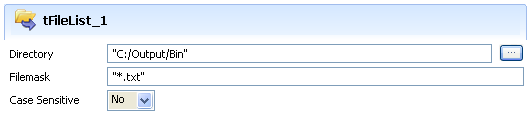

Scenario: Deleting files
- This very simple scenario describes a job deleting files from a given directory.

- Click and drop the following components: tFileList, tFileDelete, tJava.
- In the tFileList Properties, set the directory to loop on in the Directory field.

- The filemask is "*.txt" and no case check is to carry out.
- In the tFileDelete Properties panel, set the File Name field in order for the current file in selection in the tFileList component be deleted. This allows to delete all files contained in the directory defined earlier on.

- press Ctrl+Space bar to access the list of global variables. In Java, the relevant variable to collect the current file is:
((String)globalMap.get("tFileList_1_CURRENT_FILEPATH")). - Then in the tJava component, define the message to be displayed in the standard output (Run Job console). In this Java use case, type in the Code field, the following script:
System.out.println( ((String)globalMap.get("tFileList_1_CURRENT_FILE"))
+ " has been deleted!" ); - Then save your job and press F6 to run it.

- The message set in the tJava component displays in the log, for each file that has been deleted through the tFileDelete component.